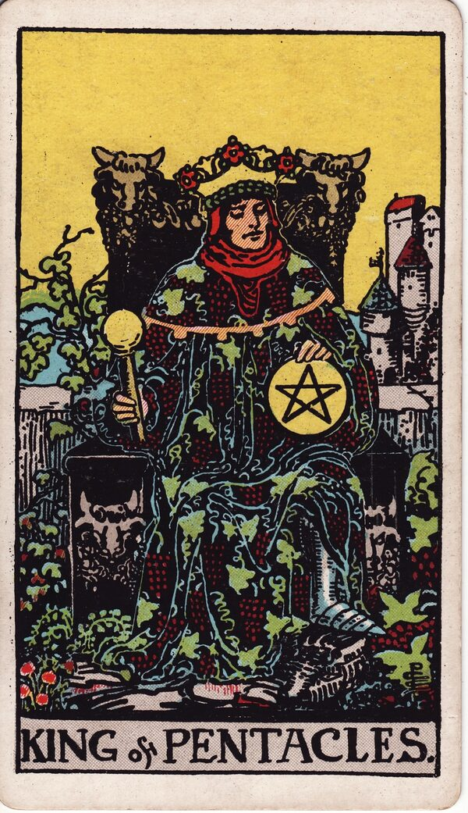

Minor Arcana · Suit of Pentacles
King of Pentacles Tarot Card Meaning
The King of Pentacles is established abundance — wealth, security, discipline, the successful provider. Want to know what it means in your spread? Every reader on our line is hand-vetted — connect in under 60 seconds, $1 for your first minute, hang up anytime.
- Hand-vetted readers
- Available 24/7
- Hang up anytime

King of Pentacles — What It Shows
The King sits on a throne carved with bulls, robed in grapevines, one hand on a pentacle, a thriving estate behind him. Everything around him is the fruit of long, disciplined effort. As the culmination of the earth suit, he has mastered the material world outwardly: wealth built and maintained, security provided, abundance shared from a place of stability rather than fear.
King of Pentacles Upright Meaning
Upright, the King of Pentacles is wealth, security, and successful provision. Financial mastery, business acumen, discipline, generosity from abundance, and dependable leadership. As a quality to embody: build solid security, manage resources wisely, and provide generously without becoming controlled by money. Its core note is abundance, grounded and shared.
King of Pentacles Reversed Meaning
Reversed, the abundance corrupts. Greed, materialism, financial mismanagement, using money as control, status obsession, or stinginess. Security has become the master rather than the servant.
King of Pentacles as a Person
As a person, the King of Pentacles is a successful, stable, generous, disciplined provider (any gender) — financially secure, dependable, often a businessperson or established figure. The shadow: materialistic, controlling with money, or status-driven.
King of Pentacles as Feelings & in Love
As feelings, the King of Pentacles is steady, committed, and providing — secure, generous interest expressed through reliability and building a stable life, not grand gestures. Example: a caller unsure whether a dependable, undramatic partner truly loved her drew this card; the read reframed the steadiness — for this energy, providing security and showing up consistently is devotion, deep and durable.
King of Pentacles in Career & Money
For work it's financial success, business leadership, security, and disciplined wealth-building. Example: someone weighing a steady, prosperous path against a flashier gamble pulled this card; the message favoured the King's way — abundance built and maintained with discipline lasts, where the gamble may not.
King of Pentacles as Advice
As advice: build and steward security wisely, lead and provide generously, and let money serve your life rather than run it.
King of Pentacles Reversed in Love & Career
Reversed, this card deserves a closer look by area. In love, it's money used as control or leverage, materialism over emotional connection, or a partner who provides but withholds warmth. In career, reversed it's greed, financial mismanagement, status-chasing, or a domineering boss who measures everything in money. The reversed King's question is whether security serves you or owns you. A live reader can help you tell stable generosity from control.
What People Ask About the King of Pentacles
The questions readers hear most about this card:
"King of Pentacles as feelings?"
Steady, committed, providing — secure devotion shown through reliability.
"Is he stable / a good provider?"
Upright, very — financially secure and dependable.
"Reversed — is he controlling with money?"
Possibly — materialism or money-as-leverage; context decides.
"Person or energy?"
Either — a successful, grounded individual, or a call to build security wisely.
King of Pentacles — Yes or No?
Upright: a strong yes, especially for money, security, and stable commitment. Reversed leans no, or "not while money is the master."
King of Pentacles Timing in a Reading
Timing is the least precise thing tarot does, so treat this as a lean, not a date. Court cards describe a person or energy more than a clock; when the King of Pentacles does flag timing, readers frame it as an established, long-term situation rather than a quick result. Reversed, mismanagement distorts it. A live reader reads timing from the full spread and your question far more reliably than the card alone.
King of Pentacles Card Combinations
Context changes everything — a few pairings readers see often:
King of Pentacles + Queen of Pentacles
A prosperous, stable, mutually supportive partnership.
King of Pentacles + Ten of Pentacles
Established wealth becoming lasting legacy and security.
King of Pentacles + The Devil
Material success curdled into greed or control.
King of Pentacles in a Tarot Reading
A meanings page is the map; a live reading is the territory. The King of Pentacles shifts with its position and the cards around it — which is what a hand-vetted reader interprets for your question. See the full Suit of Pentacles, all 56 cards on the Minor Arcana hub, or start a phone tarot reading.
← Queen of Pentacles · Back to: Suit of Pentacles →
What Does the King of Pentacles Mean for You?
A meanings list is the map; a live reading is the territory. We'll connect you with the right hand-vetted tarot reader in under 60 seconds. $1/min first call · 15 minutes for $10 · hang up anytime · 100% satisfaction promise.
Call (888) 920-6662 NowKing of Pentacles — Frequently Asked Questions
What does the King of Pentacles mean?
Wealth, security, and successful provision — disciplined, generous abundance.
What does it mean reversed?
Greed, materialism, financial mismanagement, or being controlling with money.
What does it mean as feelings?
Steady, committed, providing — secure devotion shown through reliability.
What does it mean as a person?
A successful, stable, generous, disciplined provider.
How much does a reading cost?
First-time callers pay $1/min, or 15 minutes for $10, and you can hang up anytime.
Get Your Tarot Reading Now
Connected to a hand-vetted reader in under 60 seconds, the cards pulled on your real question, and you hang up with clarity.
Call (888) 920-6662